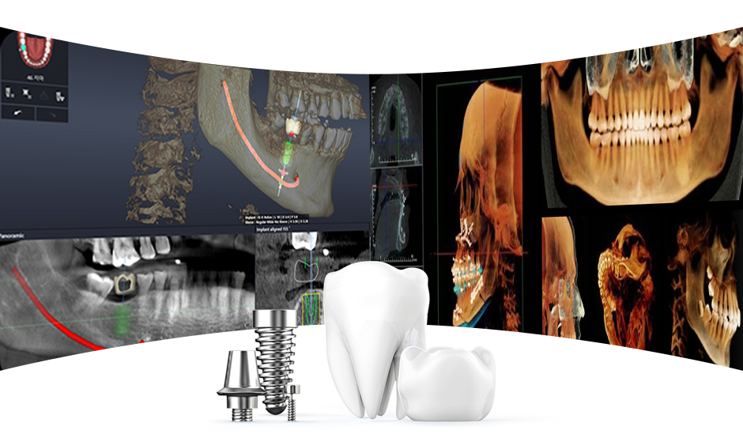

치의학 박사가 진료하는 곳
1:1 개인 맞춤형 임플란트
환자마다 다른 치아상태,
임플란트 수술 부위의 잇몸 모양과 치조골의 높낮이가 다르기에
환자 개인에 맞춘 치료계획으로 임플란트를 식립합니다
임플란트는 치과 치료 중에서도 난이도가 아주 높은 편입니다
잘못 시술 받으면 부작용이 발생되거나 재수술을 해야 하는 경우가 발생하기도 합니다
이때 자가혈을 이용해 임플란트를 진행하면 더욱 안전하게 치료가 가능합니다


풍부한 임상경험의 의료진이
책임지고 섬세하게 진료합니다

환자마다 다른 치아상태,
임플란트 수술 부위의 잇몸 모양과 치조골의 높낮이가 다르기에
환자 개인에 맞춘 치료계획으로 임플란트를 식립합니다


"임플란트를 하자니 비용이 부담스럽고 틀니는 불편한데 좋은 방법이 없을까"
고민하시는 분들을 위한 임플란트 틀니는 적은 수의 임플란트 (2개 ~ 6개)를 심어
똑딱단추를 통해 틀니를 치아에 연결하는 보철치료입니다

BEFORE

AFTER
덧니 발치 교정 방법은 소구치(송곳니)를 발치하여 공간을 확보한 후 교정을 진행합니다.
교정 시작 전
교정 장치 부착
소구치 발치
교정완료
임플란트 치료 후
통증, 붓기, 출혈최소화를
원하는 분
알러지가 있어
진통제 등의 활용이
어려운 분
첨단 임플란트
시술을
원하는 분
자신의 혈액을 이용한
부작용 적은 시술을
원하는 분
투명 강화
플라스틱 재질로 잘
보이지 않음
언제든지
탁부착이
가능
결찰 와이어를
당기지 않아
간단한 치료
내원 횟수
최소화
발음하는데
지장이
적음
치아를 발치한 후, 당일 즉시 임플란트를 식립하는 방법의 발치즉시 임플란트는
번거롭고 부담스러운 치료과정이 줄어들어 치료기간이 단축됩니다
다른 부정교합
요소에 따라 비발치 또는
발치 교정 진단 가능
| 항목 | 보험 내용 |
|---|---|
| 적용 대상 |
|
| 적용 범위 |
|
| 본인 부담률 |
|
자신의 혈액에서 채취한 혈소판 농축 섬유소를 이용하여
임플란트 치료를 진행하는 자가혈 임플란트는
빠른 치유와 세포 활성화로 인한 치조골의 형성에 도움을 줄 수 있어
더욱 안정적인 치료가 가능합니다.
통증, 출혈, 붓기를 최소화하고 빠른 회복이 가능한 임플란트를 원한다면
자가혈 임플란트가 좋습니다.
잇몸뼈가 약하거나 부족해서 임플란트를 받지 못하는 경우가 대다수 입니다.
연세굿플란트의 의료진은 풍부한 경험으로 인한
뼈이식 노하우로 임플란트 성공률을 높히고 있습니다.
불가능 할까봐 치료를 포기하셨던 분들!
연세굿플란트의 내원을 권유드립니다.
Geistich Bio-Oss®
탁월한 생체적합성, 높은 골전도성, 안정적인 흡수 속도
우수한 볼륨 보존 능력, 혈관 형성 및 신생골 부착에 효과적
인체의 골과 유사한 크리스탈 구조
발치한 치아 / 사랑니 / 하악골뼈
인체 거부 반응 無
우수한 골 형성력

기존 임플란트의 경우 이식된 뼈가 정상적인 뼈로 대체하는데 걸리는 시간은 약 6개월 이상 소유되나, PRF에 함유된 성장인자가 골형성을 촉진하여 임플란트 시술기간을 단축시켜 줍니다 또한 회복기간 단축으로 환자의 통증을 최소화합니다
수술 후, 이식된 골이 감염되어 정상골에 흡수되는 경우가 발생할 수 있는데, 자가혈이식 임플란트의 경우에는 감염의 가능성이 낮아집니다 또한 본인의 혈액에서 추출한 것이기 때문에 거부반응이나 부작용이 생기지 않습니다
3차원 영상 스캔 장비를 통해 빠른 시간 내 편안하게 구강을 촬영하며 99.9% 정확하게 구현
수술 후, 이식된 골이 감염되어 정상골에 흡수되는 경우가 발생할 수 있는데,
자가혈이식 임플란트의 경우에는 감염의 가능성이 낮아집니다.
또한 본인의 혈액에서 추출한 것이기 때문에 거부반응이나 부작용이 생기지 않습니다.
편하게 마음대로 필요한 위치에 뼈이식을 할 수 있고,
성장인자가 회복을 도와 잇몸뼈와 잇몸 재생을 촉진시켜 기존의 시술보다 부작용이 줄어들게 됩니다.
뿐만 아니라 혈소판 지혈로 출혈을 예방해 부종을 감소시켜 줍니다.
이식재료를 편하게 사용할 수 있게해서 적은 양으로 효과적으로 원하는 위치에 사용할 수 있으므로
비용이 절감되는 효과를 가져옵니다.
이식재료를 편하게 사용할 수 있게해서 적은 양으로 효과적으로 원하는 위치에 사용할 수 있으므로
비용이 절감되는 효과를 가져옵니다.

성장기 어린이의 경우
앞니가 거꾸로 물리는 것을 발견 즉시 치료해야 하는 상황입니다.
반대교합의 원인을 판단해 골격적인 문제가 있다면
6~9세경에만 가능한 턱교정장치(페이스 마스크, 친캡)를 통해 반대교합을
해소하고 성장의 양상을 개선시킬 수 있습니다.

성인의 경우 그 정도에 따라
교정용 미니 스크류를 이용하여 악교정 수술없이 반대교합을 치료할 수도 있고,
정도가 심한 경우에는 악교정 수술을 동반하여 근본적인 치료를 해야 합니다.

환자의 소량의 혈액을 채취하여 환자에게 필요한 PRF의 종류에 맞게 구분합니다

Dr.Choukroun의 프로토콜에 따라 고속 원심분리하여 고농축 PRF를 분리합니다

채취한 A-PRF는 환부에 맞게 자르거나 납작한 형태로 성형하여 사용합니다

액상의 i-PRF는 주사기를 이용 골이식재와 혼합 후 사용하여 골형성을 촉진시켜 줍니다

BEFORE

AFTER
BEFORE
AFTER